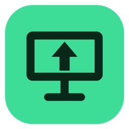
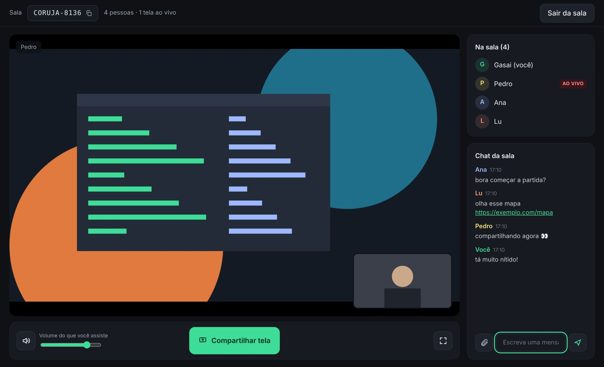

TelinhaTela, áudio e câmera em alta qualidade, direto do seu PC para o deles. Leve, grátis e sem servidor no meio.

Transmita na resolução real da sua tela, com o som do PC junto.
Qualquer um da sala pode compartilhar. É só clicar para trocar de tela.
Ligue sua câmera junto da tela. Quem assiste pode arrastar a câmera para onde quiser.
Mande mensagens, links e prints. As imagens já aparecem abertas, é só colar.
Nada passa por servidor: tudo vai criptografado, de um PC para o outro.
Instalador pequeno e usa a placa de vídeo para transmitir, deixando o PC livre.
Abra o arquivo baixado e clique em Instalar. O Telinha fica no menu Iniciar.
Coloque seu nome, crie a sala e mande o código (tipo LOBO-7342) para a galera.
Os amigos entram com o código e qualquer um pode mostrar a tela.
O Windows pode avisar "O Windows protegeu o computador" porque o app é novo. É só clicar em Mais informações e depois em Executar assim mesmo.